OIL COOLER > REMOVAL |
| 1. REMOVE REAR ENGINE UNDER COVER ASSEMBLY |
Remove the 4 bolts and rear engine under cover.
| 2. REMOVE NO. 1 ENGINE UNDER COVER SUB-ASSEMBLY |
Remove the 4 bolts.
 |
Unhook the No. 1 engine under cover from the vehicle body as shown in the illustration.
| 3. REMOVE FRONT FENDER APRON SEAL RH |
Remove the 4 clips and front fender apron seal RH.
| 4. REMOVE FRONT NO. 1 FENDER APRON TO FRAME SEAL RH |
Remove the 5 clips and front No. 1 fender apron to frame seal RH.
| 5. REMOVE FRONT BUMPER COVER (w/ Off Road Package) |
Remove the front bumper cover (Click here).
| 6. DRAIN ENGINE COOLANT |
Loosen the radiator drain cock plug.
Remove the radiator cap. Then drain the coolant from the radiator.
Loosen the 2 cylinder block drain cock plugs. Then drain the coolant from the engine.
Tighten the 2 cylinder block drain cock plugs.

| *1 | Radiator Reservoir | *2 | Radiator Cap |
| *3 | Cylinder Block Drain Cock Plug | *4 | Radiator Drain Cock Plug |
Tighten the radiator drain cock plug by hand.
| 7. REMOVE FRONT EXHAUST PIPE ASSEMBLY |
Disconnect the heated oxygen sensor connector.
Remove the 2 bolts and 2 compression springs from the center exhaust pipe.
Remove the 2 nuts and front exhaust pipe.
Remove the 2 gaskets.
| 8. REMOVE NO. 2 OIL COOLER INLET HOSE AND NO. 2 OIL COOLER OUTLET HOSE |
| 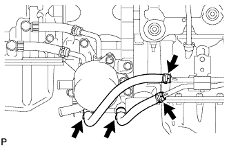 |
Disconnect the No. 2 oil cooler inlet hose and No. 2 oil cooler outlet hose from the No. 1 oil cooler inlet tube and No. 1 oil cooler outlet tube.
Disconnect the 2 hoses from the transmission oil thermostat and remove them.
| 9. REMOVE TRANSMISSION OIL COOLER ASSEMBLY |
| 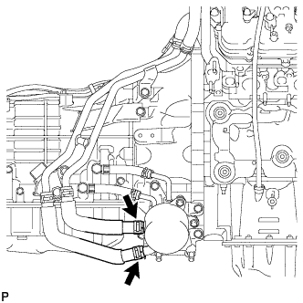 |
Disconnect the 2 water by-pass hoses from the transmission oil cooler.
| 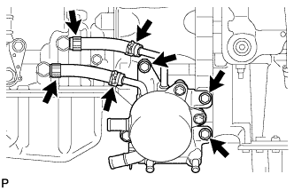 |
Disconnect the No. 1 oil cooler inlet hose and No. 1 oil cooler outlet hose from each oil cooler tube union.
Remove the 3 bolts and transmission oil cooler with transmission oil thermostat.
Remove the 2 hoses from the transmission oil thermostat.
| 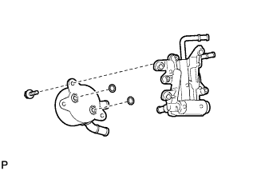 |
Remove the 3 bolts and transmission oil cooler from the transmission oil thermostat.
Remove the 2 O-rings from the grooves of the transmission oil cooler.
| 10. REMOVE NO. 3 OIL COOLER INLET HOSE AND NO. 3 OIL COOLER OUTLET HOSE |
| 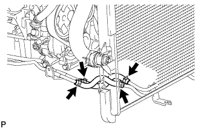 |
Disconnect the No. 3 oil cooler inlet hose and No. 3 oil cooler outlet hose from the No. 2 oil cooler tube.
Disconnect the 2 hoses from the No. 1 oil cooler inlet tube and No. 1 oil cooler outlet tube and remove them.
| 11. REMOVE NO. 1 OIL COOLER INLET TUBE AND NO. 1 OIL COOLER OUTLET TUBE |
 |
Remove the 2 bolts to open the 2 No. 2 flexible hose clamps and remove 2 oil cooler tubes.
Remove the 2 bolts and 2 No. 2 flexible hose clamps.
| 12. REMOVE OIL COOLER ACCESSORY ASSEMBLY |
| 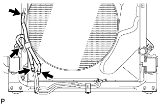 |
Disconnect the 2 oil cooler hoses from the No. 2 oil cooler tube.
Disconnect the 2 oil cooler hoses from the radiator and remove the oil cooler accessory.
| 13. REMOVE NO. 4 OIL COOLER INLET HOSE AND NO. 4 OIL COOLER OUTLET HOSE (w/ Off Road Package) |
| 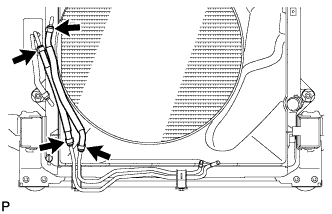 |
Disconnect the No. 4 oil cooler inlet hose and No. 4 oil cooler outlet hose from the No. 2 oil cooler tube.
Disconnect the 2 hoses from the radiator and No. 3 oil cooler tube and remove them.
| 14. REMOVE NO. 6 OIL COOLER OUTLET HOSE (w/ Off Road Package) |
| 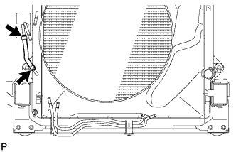 |
Disconnect the No. 6 oil cooler outlet hose from the radiator and No. 3 oil cooler tube and remove it.
| 15. REMOVE NO. 2 OIL COOLER TUBE SUB-ASSEMBLY |
| 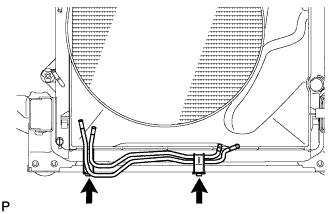 |
Remove the 2 bolts and No. 2 oil cooler tube.
| 16. REMOVE NO. 5 OIL COOLER INLET HOSE AND NO. 5 OIL COOLER OUTLET HOSE (w/ Off Road Package) |
| 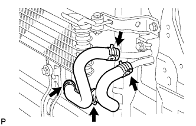 |
Disconnect the No. 5 oil cooler inlet hose and No. 5 oil cooler outlet hose from the No. 3 oil cooler tube.
Disconnect the 2 hoses from the oil cooler and remove them.
| 17. REMOVE NO. 3 OIL COOLER TUBE SUB-ASSEMBLY (w/ Off Road Package) |
| 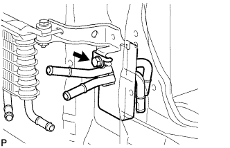 |
Remove the bolt and No. 3 oil cooler tube.
| 18. REMOVE OIL COOLER ASSEMBLY (w/ Off Road Package) |
| 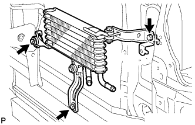 |
Remove the 3 bolts and oil cooler.
| 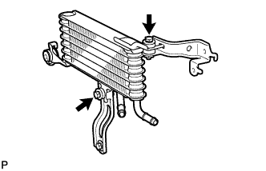 |
Remove the 2 bolts and oil cooler brackets.